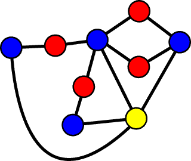

Delft-Hydra 2004 API Specification
version 4.0
Irv Elshoff @ WL |
Delft
Hydraulics
21 jun 04
Contents
Introduction
The Hydra executive provides parallelism, synchonization and
message passing for domain decomposition (DD) and coupling in
Delft3D. This document describes the semantics and C++ bindings
of Hydra for Delft3D developers.
Hydra supports a collection of interacting objects called iterators. Each iterator
repeatedly does some work (e.g., computation or I/O) and then exchanges
information with a fixed set of neighboring iterators. They continue
doing this until they all decide to stop. (A single iterator can
force termination if an error occurs.) The work an iterator does
is specified by its iterator function, which is supplied by the Delft3D
developer.
Iterators are classified according to some essential common property
and organized into categories.
The neighbors of an iterator may not belong to same category as the
iterator itself.
Consider the following undirected multipartite graph:

The blue nodes could represent hydrodynamic flow processes (one for
each each subdomain), the red nodes DD mappers and the yellow node an
online visualization process that renders a coherent view of the entire
domain to an end user. Interactions between the flow processes
and visualizer could occur every simulation time step, whereas
interactions between flow processes and mappers could be more frequent
within a numerical solver loop.
All of the iterators in a given category can run in parallel. At
any moment in time, iterators of only one category are executing.
Because not all iterators can run simultaneously and the number of
iterators in a category may exceed the number physical processors
available, Hydra provides clusters
to group iterators together on a single processor so that efficient use
is made of the underlying hardware. Clusters also define a common
address space so that shared memory can be used for communication.
Communication between clusters is done by message passing.
Messages are stored in blobs,
which are opaque to Hydra.
Execution Overview
Hydra goes through four phases during execution:
- Configuration: Instantiation of categories, clusters and
iterators.
- Initialization: Sequential execution the iterator
functions up to a certain point.
- Simulation: Parallel execution of iterators with message
exchange. This is the main phase of the program.
- Finalization: Available for non-Hydra wrapup.
Hydra starts out as a single thread. The Hydra executive must
be bootstrapped before any other operations with:
void
Hydra::Boot
(
void (*configfunction)
(int argc, char * argv[])
void (*finalfunction)
(char * reason)
);
The arguments to Boot are pointers to two user-defined
functions. The first function should configure Hydra by creating
instances of iterators, categories and clusters. It is given a
copy of the command-line arguments used to start the program.
Some parameters may be relevant (e.g., the name of a configuration
file). Unrecognized parameters should be ignored; they may be
meaningful to Hydra itself or other components of the program.
The second function is called after the simulation phase completes,
and can be used to clean up loose ends (e.g., release allocated
resources). Normally, it is passed a NULL
pointer, unless the program has aborted, in which case it is passed a
pointer to a character string describing the reason for the abort (see
below). The finalization function is optional; NULL
may be passed to Boot if it not present.
The configuration and finalization functions will run in the same
address space. They do not, however, have access to the address
spaces of the iterators.
After the configuration function returns, Hydra will sequentially
invoke all iterator functions within their
clusters. They can initialize their
internal states, make Hydra calls to determine the configuration
topology, and prepare for simulation. Code in the initialization
phase cannot use pointers to objects created in the configuration phase
because different address spaces are used. When their
initialization has been completed, iterator functions must call:
void
Hydra::Ready
(
void
);
When all iterator functions have called Ready, the initialization
phase is concluded and the simulation proper is started. In this phase
iterators will be allow to run in
parallel, and the simulation proceeds until all iterators have returned
from their function.
If an error occurs during any phase of the program that
makes
continuing on pointless, the entire program can be terminated
immediately with:
void
Hydra::Abort
(
char * reason,
...
);
Reason is a character string that will be passed to the finalization
function and
can be used to describe why the simulation was aborted. Reason
may be a printf format string with additional arguments, in which case
the string will be rendered before being passed to the finalization
function.
During the simulation phase iterators synchronize and exchange
information using Send and Receive calls. The general execution
paradigm used in Delft3D is that an iterator repeatedly sends messages
to all its neighbors (in a certain category) and then receives messages
from all neighbors. A iterator is effectly blocked until all its
neighbors have signalled it to continue. This causes a systolic
execution pattern.
At the very end, when all iterators have terminated, the
finalization function defined in the Initialize call will be
invoked. The
reason argument is that supplied to Abort, or NULL for normal termination.
Names and IDs
Hydra is object oriented. Three object classes - categories,
clusters and iterators - have three different kinds of identifiers:
- A character string name for user-oriented output (max length is Hydra::MAXSTRING).
- An integer ID for comparison purposes.
- A C++ pointer for local invocation. Local means within the
same program phase and cluster.
Names and IDs are global and available in all phases of the
program. All three classes have methods to retrieve the name and
ID given a pointer:
char
* name = myobject->Name (
void
);
int id = myobject->ID (
void
);
An ID is a nonnegative integer less than Hydra::MAXCATEGORIES, Hydra::MAXCLUSTERS and Hydra::MAXITERATORS,
respectively.
Blobs are anonymous and do not have these methods.
Categories
A category defines a set of objects that have something significant in
common. For example, in Delft3D, flow processes, mappers and
barriers
are all categories.
A category is created with:
Category
* mycat = new Hydra::Category (
int * id,
const char *
name
);
The ID argument is a point to an integer that will be set to the ID of
the new category. If the pointer is NULL, no
assignment will be done.
Given a category name, a point to its object instance can be retrieved
with:
Category
* mycat = Hydra::LookupCategory (
const char * name
);
Blobs
Besides synchronization, Hydra provides a means of exchanging
data. The organization and content of the data is
arbitrary and opaque to Hydra. To Hydra, data is nothing more
than a contiguous block of
memory of a certain size, and is called a blob. Hydra passes
copies of the data around as appropriate. Blobs are used in
iterator initialization and for message passing.
To create a blob, call:
HydraBlob
* myblob = new Hydra::Blob (
const void * address,
const unsigned
int size
);
This will create a small descriptor containing a copy of the address
and size (in bytes). The data itself is not copied or otherwise
accessed. The address should point to statically or dynamically
allocated memory that remains valid for the lifetime of the blob.
If the blob is used as an argument for Send or Receive (see Messages
below) the data referred to in the descriptor is copied as appropriate
(from the adress for Send, to the address for Receive).
Blobs provide two methods to retrieve the instantiation parameters:
void
* address = blob->Address (
void
);
unsigned int size = blob->Size (
void
);
Address returns a pointer to the blob data. Size returns its
length in bytes.
Iterators
Configuration Phase
An iterator is an envelope for an active object. Iterators are
created in the configuration phase (only) with:
Iterator
* myiter = new Hydra::Iterator (
int * id,
char * name,
Blob * configblob,
Category * category,
void
(*function)
(
Iterator
* self,
char *
name,
Blob * configblob
),
unsigned
int weight = 0
);
The ID argument is a point to an integer that will be set to the ID of
the new iterator. If the pointer is NULL, no
assignment will be done.
Iterators can be parameterized by means of a
blob, which could contain a string or a complex data structure.
If parameterization is not necessary, a NULL pointer
should be given.
Iterators have weights, which are used to
automatically cluster itertators for load balancing (see Clusters).
The iterator function is invoked by Hydra to carry out the actual
work. The self argument is a pointer to the iterator object for
various Hydra calls described below. The name and configuration
blob parameters are copies of the arguments to the object instantiation
call.
Iterators are joined with:
void
Hydra::Join (
Iterator * iter1,
Iterator * iter2,
unsigned int affinity = 0
);
Join creates a symmetic relationship between two iterators.
Joining A and B is the same as joining B and A. Join is
idempotent, so doing both joins would result in a single relationship
(and no error or warning).
The categories of both iterators must
be different. Iterators that belong to the same category cannot
be joined.
The affinity is used for load balancing, which is
described later. If two iterators are joined more than once with
varying affinities, the last affinity given will be used.
Hydra runs until all iterators have terminated. Sometimes it is
convenient to write iterators and repeatedly receive a message an
indefinite number of times. To avoid requiring user code to shut
down all iterators for global termination, an iterator may "detach"
itself so that its termination is not required for global
termination. Iterators can be detached with:
void iterator->Detach (
void
);
Initialization and Simulation Phases
An iterator function can call various Hydra functions to get
information about the topology and attributes of other iterators.
Since the topology is static, these calls will always return the same
information; the return values can be remembered and used later.
Iterator
* self = IteratorSelf (
void
);
Returns an object pointer for the currently executing iterator.
Blob * configblob = iterator->ConfigBlob (
void
);
Returns a reference to the configuration blob of an iterator.
Category
* cat = iterator->Category (
void
);
Returns the category of any iterator.
unsigned
int count = iterator->NeighborCount (
Category * cat = NULL
);
Returns the number of neighbors in a given category or all categories
(no argument) of an iterator.
void
iterator->RewindNeighbors (
Category * cat = NULL
);
Iterator * neighbor = iterator->NextNeighbor (
Category * cat = NULL
);
These functions allow looping through a list of neighboring
iterators. The Rewind function resets the list. The Next
function fetches the next iterator on the list. The order is
arbitrary but consistent. When the list is exhausted NULL
is returned. Like in the Count function, the category can be
omitted to get all neighbors regardless of their category. This
is
convenient when an iterator is known to have only one kind of
neighbor. If a
category is specified, the pointer should be the result of a
LookupCategory done in the same program phase.
The Rewind function must be called at least once before Next with the
same argument. Rewind will print a warning if the iterator does
not have any neighbors of the requested category. This can be
avoided by ensure that the return value of Count is not zero.
Hydra provides an iterator-specific value that can be set and retrieved
with:
void
iterator->SetValue (
void * value
);
void * value = iterator->GetValue (
void
);
The value can be considered a global variable for all functions called
from the iterator function. Each iterator will have its own
actual value. If more then one value per iterator is required, an
aggregate data structure can be created and a pointer to it used as the
single iterator value.
Messages
Hydra iterators can exchange messages with immediate neighbors.
This is done with:
void
neighbor->Send (
Blob * message
);
This function copies the blob to a queue of messages for the specified
iterator and returns. The blob can be deleted or reused for an
identically sized message immediately after Send returns.
void
neighbor->Receive (
Blob * message
);
This gets the oldest message on the queue sent from the specified
neighbor. There is no wildcard; the neighbor must be explicitly
mentioned. If the queue is empty, Receive will block until a
message is Sent the neighbor. The blob should be large enough to
accomodate the message (otherwise the program will abort). The
maximum blob size is just short of 4 GB (32-bit address size
limitation).
Care should be taken to avoid deadlock. If iterators fit the
following paradigm
Blob
* out = new Hydra::Blob (NULL, sizeof abc);
Blob * in = new Hydra::Blob
(NULL, sizeof xyz);
while (! finished) {
// do useful work of some kind involing data
abc and xyz
// send messages to all neighbors
self->RewindNeighbors ();
while
(Iterator * neigh = NextNeighbor ()) {
out->Assign (abc);
neigh->Send (out);
}
// get messages from all nieghbors
self->RewindNeighbors ();
while
(Iterator * neigh = NextNeighbor ()) {
neigh->Recieve (message);
xyz =
in->Value ();
}
}
deadlock cannot occur. More complicated forms of communication
are supported by Hydra, but without deadlock detection or avoidance.
Clusters
Load Balancing
Iterators are active objects implemented as
threads that do computations. On a shared memory multiprocessor
(e.g., SGI Origin) the operating system dynamically assigns threads to
CPU's to acheive the best overall load balance (including other users'
programs). On a distributed memory machine (e.g., Linux cluster)
threads do not migrate. How iterator threads are
placed on the physical nodes can affect performance. One wants
maximal parallellism by having many nodes, but also wants to attain
good utilization of the hardware resources. Simply placing every
iterator on its own node is wasteful because they alternate execution
based on categories, so many nodes would be idle at any given
time. Also, placing related iterators on one node cuts down on
the overhead for communication since the physical network is not
involved.
How to optimize the placement of Delft3D iterators on computational
nodes
is a non-trivial problem. The topology of the domain and the size
and complexity of the subdomains can be used to determine a good
placement. The width of the interfaces between subdomains is
related to the amount of communication between objects. This is
called the "affinity" of one iterator to another, and is a
measure of how desireable it is to keep two iterators on the same
node. The number of grid cells and types of the physical
processes simulated can be used to estimate the computational
requirement requirement of an iterator, which called its
"weight".
Affinities
and weights are implied by the Delft3D input, and are independent on
the underlying hardware configuration.
Given a set of affinities and weights and the number of nodes, a
clustering algorithm can be used to place iterators on nodes. The
algorithm is simpler if the nodes are identical and communication
communcation costs the same between any pair of nodes. The WL
Linux cluster "hydrax" conforms to this model.
Weights and affinities are non-negative integers
and assumed to be on some common linear scale. They are specified
as
optional arguments to the iterator
constructor and join method. Hydra does not attach any mean to
the values
themselves.
The general heuristic employed by the placement algorithm is to spread
the processes over all clusters as evenly as possible based on their
weights. Since this is equivalent to the bin packing problem,
which is NP-complete, the goal is a reasonable distribution, not an
optimal one. Next the mappers are placed in the same cluster as
the subdomain with which it has the greatest affinity. If,
however, too many mappers aggregate around a heavy process, some will
be moved to the less busy cluster of their other process.
Barriers are all left on the main cluster.
Automatic placement is done only if Place is never called. If not
clusters have been created, Hydra will create one for every node of the
underlying hardware before doing automatic placement.
Automatic placement based on weights and affinities is not yet
implemented. Manual placement is.
API Routines
A Hydra cluster is an abstraction of a physical node in a distributed
memory computer. Clusters contain a collection of zero or more
iterator objects. The iterators in a cluster share
a common address space. There is always one cluster (called the
"main" cluster) present. Code for the configuration,
initialization and finalization phases run in the main cluster and is
also the default cluster for all iterators.
Additional clusters can be created with:
Cluster
* cluster = new Hydra::Cluster (
int * id,
const char *
name
);
Iterator objects are placed in a cluster with:
void iterator->Place (
Cluster * cluster
);
Clusters should be created and populated in the configuration phase of
Hydra execution.
Iterators can
determine
in which cluster they belong with:
Cluster
* iterator->Cluster (
void
);
Two objects in the same cluster can share memory. If iterators
have the same cluster ID (and hence name) the can share the same
address space and C pointers can be used to communicate.
Debug Facility
Multithreaded programs are notoriously difficult to debug.
Hydra provides a trace mechanism to help locate problems. The
amount of output is determined by the notification level. Each
successive level adds more detail.
- 0 = Nothing.
- 1 = Major program phases and the invocation and
termination of iterators.
- 2 = Configuration information and message events.
- 3 = Everything except...
- 4 = Low-level MPI and Pthreads blocks and unblocks
The debug level can be set with:
void
Hydra::SetDebugLevel (
int level
);
If done in the configuration phase it applies globally.
Thereafter it only affects the host on which the iterator is executing.
[ToDo: describe output]
Developer Notes
API definitions are contained in include file "hydra.h". This
file also contains non-API definitions, below the line "No API Beyond This Point"; they
should not be used outside Hydra itself.
The namespace Hydra
can be used to abbreviate names.
Hydra is available in the library "libhydra.a".
The implementation uses fixed sized buffers for various purposes, e.g.,
strings, configuration blobs, etc. The limits are printed in
debug level 3 (not yet implemented).
IP sockets are used for communication in Hydra. Each iterator to
iterator connection uses one socket on each host. Linux typically
supports 1000 sockets (or more) per process.
The End.